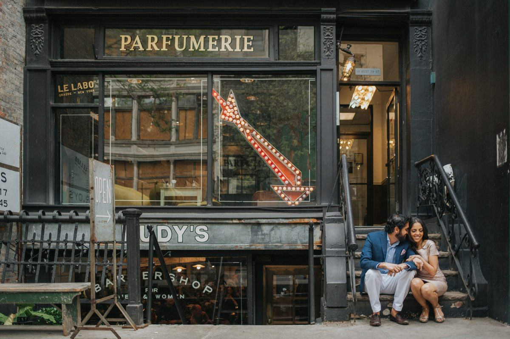

“New York makes you feel anonymous and extraordinary at the same time. In the rush of Grand Central, amid a thousand strangers, there was only them.”

Every street corner a new frame. Architecture rising into the pale afternoon sky as they walked the avenues together.





“As the city shifted from gold to blue, we found our final light near the bridge.”